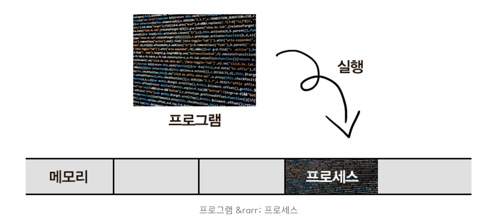
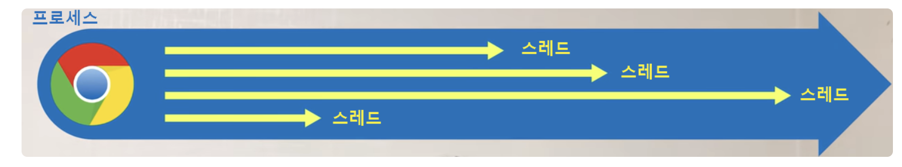

Process & Thread
개요¶
운영체제에서 프로세스와 스레드는 프로그램 실행의 기본 개념이다. 프로그램, 프로세스, 스레드의 정의와 특징, 그리고 이들 간의 관계를 다룬다.
실무 팁: 프로세스는 독립적인 메모리 공간을 가진다. 스레드는 프로세스보다 가볍고 빠르며, 같은 프로세스 내의 스레드들은 메모리 공간을 공유한다.

프로그램 (Program)¶
프로그램의 정의¶
프로그램은 실행 가능한 명령어들의 집합으로, 디스크에 저장된 정적인(static) 파일입니다.
프로그램의 특징: - 소스 코드가 컴파일되어 생성된 실행 파일(exe, bin 등) - 실행되기 전까지는 단순히 디스크에 저장된 데이터에 불과 - 운영체제가 이해할 수 있는 형태의 기계어 명령어로 변환됨
프로그램 생성 과정:
프로그램은 컴파일러나 인터프리터에 의해 생성됩니다.
이 과정에서 소스 코드의 논리적 구조가 물리적 메모리 레이아웃으로 매핑되며, 실행 시 필요한 모든 정보가 포함됩니다.
프로그램의 구성 요소¶
1. 코드 영역 (Text/Code Segment)¶
코드 영역은 실행할 명령어들이 저장된 영역입니다.
이 영역은 읽기 전용(read-only)으로 설정되어 있으며, 프로그램 실행 중 변경되지 않습니다.
여러 프로세스가 같은 프로그램을 실행할 경우, 코드 영역은 메모리에 한 번만 로드되고 모든 프로세스가 공유할 수 있습니다(코드 공유).
코드 영역의 특징: - 불변성: 실행 중 변경되지 않는 읽기 전용 영역 - 공유 가능성: 같은 프로그램의 여러 인스턴스가 코드를 공유 - 최적화: 컴파일러 최적화가 적용된 최종 기계어 코드 - 재배치 가능: 동적 링킹을 위한 재배치 정보 포함
2. 데이터 영역 (Data Segment)¶
데이터 영역은 전역 변수, 정적 변수, 상수 등이 저장된 영역입니다. 이 영역은 다시 두 부분으로 나뉩니다:
- 초기화된 데이터 영역: 초기값이 있는 전역/정적 변수
- 초기화되지 않은 데이터 영역(BSS): 초기값이 없는 전역/정적 변수 (0으로 초기화)
데이터 영역의 특징: - 프로세스별 독립성: 각 프로세스가 자신만의 데이터 영역을 가짐 - 전역 접근성: 프로그램 전체에서 접근 가능 - 생명주기: 프로그램 실행 시작부터 종료까지 유지
3. 리소스 영역¶
리소스 영역은 프로그램이 사용하는 이미지, 사운드, 문자열 테이블 등의 리소스가 포함된 영역입니다. 이들은 보통 실행 파일에 임베드되거나 별도의 리소스 파일로 제공됩니다.
프로그램의 특징¶
정적성 (Static Nature)¶
프로그램 자체는 실행되지 않는 상태의 코드와 데이터입니다. 디스크에 저장된 파일 형태로 존재하며, 실행되기 전까지는 메모리에 로드되지 않습니다. 이는 프로그램이 "무엇을 할 것인가"를 정의하는 설계도와 같은 역할을 합니다.
재사용성 (Reusability)¶
하나의 프로그램으로 여러 프로세스를 생성할 수 있습니다. 예를 들어, 웹 브라우저 프로그램 하나로 여러 개의 브라우저 창(각각 별도의 프로세스)을 열 수 있습니다. 이는 코드 영역의 공유를 통해 메모리를 효율적으로 사용할 수 있게 합니다.
저장성 (Persistence)¶
프로그램은 디스크에 영구적으로 저장되어 반복 실행 가능합니다. 컴파일된 실행 파일은 시스템이 재부팅되어도 유지되며, 필요할 때마다 실행할 수 있습니다.
프로그램의 실행 과정¶
프로그램이 실행되기까지의 과정은 다음과 같습니다:
- 컴파일/빌드: 소스 코드를 기계어로 변환하여 실행 파일 생성
- 로딩: 운영체제가 실행 파일을 메모리에 로드
- 초기화: 프로그램의 초기 데이터 설정 및 환경 구성
- 실행 시작: 프로그램의 진입점(entry point)부터 명령어 실행
이 과정에서 프로그램은 프로세스로 변환되며, 운영체제는 프로세스 제어 블록(PCB)을 생성하여 프로세스를 관리합니다.
프로세스 (Process)¶
프로세스의 정의¶
프로세스는 실행 중인 프로그램의 인스턴스(instance)를 말합니다. 프로그램이 디스크에 저장된 정적 파일이라면, 프로세스는 그 프로그램이 메모리에 로드되어 실행되는 동적 실체입니다.
프로세스는 운영체제가 관리하는 작업 단위이며, 각 프로세스는 독립된 메모리 공간과 시스템 자원을 할당받습니다. 프로세스는 프로그램의 코드뿐만 아니라 실행 상태, 메모리 상태, 열린 파일, 네트워크 연결 등 모든 실행 컨텍스트를 포함합니다.
프로세스 생성 과정¶
프로그램이 실행되면 운영체제는 다음 작업을 수행합니다:
-
프로그램 코드를 메모리에 로드: 실행 파일의 코드 영역을 메모리의 적절한 위치에 로드합니다. 이때 가상 메모리 시스템을 통해 논리적 주소를 물리적 주소로 매핑합니다.
-
필요한 시스템 자원 할당: CPU 시간, 메모리 공간, I/O 장치, 파일 디스크립터 등의 시스템 자원을 할당합니다. 각 프로세스는 고유한 자원 집합을 가지며, 다른 프로세스의 자원에 직접 접근할 수 없습니다.
-
프로세스 제어 블록(PCB) 생성: 프로세스의 모든 상태 정보를 저장하는 자료구조인 PCB를 생성합니다. PCB는 프로세스 스케줄링, 상태 관리, 자원 추적 등에 사용됩니다.
-
실행 상태로 전환: 프로세스를 준비(Ready) 상태로 만들고, 스케줄러가 CPU를 할당하면 실행(Running) 상태가 됩니다.
프로세스의 생명주기¶
프로세스는 생성부터 종료까지 여러 상태를 거치며, 이를 프로세스 상태 전이(State Transition)라고 합니다:
stateDiagram-v2
[*] --> New: 프로세스 생성
New --> Ready: 자원 할당 완료
Ready --> Running: 스케줄러 선택
Running --> Ready: 시간 할당량 만료<br/>인터럽트 발생
Running --> Waiting: I/O 요청<br/>이벤트 대기<br/>자원 대기
Waiting --> Ready: I/O 완료<br/>이벤트 발생<br/>자원 할당
Running --> Terminated: 정상 종료<br/>강제 종료
Terminated --> [*]
note right of New
PCB 생성
자원 할당 중
end note
note right of Ready
준비 큐에서 대기
CPU 할당 대기
end note
note right of Running
CPU에서 실행 중
단일 코어: 한 번에 하나만
end note
note right of Waiting
대기 큐에서 대기
I/O/이벤트 대기
end note-
생성(New): 프로세스가 생성되는 초기 상태. PCB가 생성되고 필요한 자원이 할당되지만 아직 실행 준비가 완료되지 않은 상태입니다.
-
준비(Ready): CPU를 할당받기 위해 대기하는 상태. 모든 필요한 자원이 할당되었고, CPU만 할당받으면 즉시 실행할 수 있는 상태입니다. 준비 큐(Ready Queue)에서 대기합니다.
-
실행(Running): CPU를 할당받아 명령을 실행하는 상태. 한 순간에 하나의 프로세스만 실행 상태일 수 있습니다(단일 코어 시스템의 경우). 시간 할당량(Time Quantum)이 만료되거나 I/O 요청이 발생하면 다른 상태로 전이됩니다.
-
대기(Waiting/Blocked): I/O 작업 완료, 이벤트 발생, 자원 할당 등을 기다리는 상태. CPU를 할당받아도 실행할 수 없는 상태로, 대기 큐(Waiting Queue)에서 대기합니다. 조건이 만족되면 준비 상태로 돌아갑니다.
-
종료(Terminated): 프로세스가 정상적으로 종료되거나 강제 종료된 상태. 모든 자원이 해제되고 PCB가 정리됩니다. 부모 프로세스가 종료 상태를 확인할 수 있습니다.
프로세스의 주요 특징¶
1. 독립성 (Isolation)¶
- 메모리 독립성: 각 프로세스는 독립된 메모리 공간을 가짐
- 보안성: 다른 프로세스의 메모리 공간에 직접 접근 불가
- 안정성: 한 프로세스의 오류가 다른 프로세스에 직접적인 영향을 주지 않음
- 통신 방식: 프로세스 간 통신은 IPC(Inter-Process Communication)를 통해 이루어짐
2. 자원 할당 (Resource Allocation)¶
- 시스템 자원: 운영체제로부터 CPU 시간, 메모리, I/O 장치 등을 할당받음
- 고유 식별자: 각 프로세스는 고유한 PID(Process ID)를 가짐
- 자원 관리: 프로세스는 필요한 시스템 자원을 요청하고 해제할 수 있음
- 스케줄링: 자원 할당은 운영체제의 스케줄러가 관리
3. 상태 관리 (State Management)¶
프로세스는 다음 상태를 가집니다:
- 생성(New): 프로세스가 생성되는 상태
- 준비(Ready): CPU를 할당받기 위해 대기하는 상태
- 실행(Running): CPU를 할당받아 명령을 실행하는 상태
- 대기(Waiting): I/O 작업 등으로 인해 대기하는 상태
- 종료(Terminated): 프로세스가 종료되는 상태
4. 프로세스 제어 블록(PCB)¶
프로세스 제어 블록(Process Control Block, PCB)은 운영체제가 프로세스를 관리하기 위해 유지하는 핵심 자료구조입니다. 각 프로세스마다 고유한 PCB가 있으며, 프로세스가 생성될 때 생성되고 종료될 때 삭제됩니다.
PCB의 주요 구성 요소:
-
프로세스 식별자(PID): 운영체제가 각 프로세스에 부여하는 고유한 번호입니다. 프로세스 관리, 부모-자식 관계 추적, 시그널 전송 등에 사용됩니다.
-
프로그램 카운터(PC): 다음에 실행할 명령어의 주소를 저장합니다. 컨텍스트 스위칭 시 이 값이 저장되고 복원되어 프로세스가 중단된 지점부터 계속 실행할 수 있습니다.
-
레지스터 상태: CPU 레지스터의 현재 값들을 저장합니다. 범용 레지스터, 스택 포인터, 상태 레지스터 등이 포함됩니다. 프로세스가 다시 실행될 때 이 값들이 복원됩니다.
-
메모리 관리 정보: 프로세스의 메모리 레이아웃 정보를 포함합니다. 코드, 데이터, 스택, 힙 영역의 주소 범위, 페이지 테이블 포인터, 세그먼트 테이블 등이 포함됩니다.
-
스케줄링 정보: 프로세스 스케줄링에 필요한 정보입니다. 프로세스 우선순위, 스케줄링 큐 포인터, CPU 사용 시간, 마지막 실행 시간 등이 포함됩니다.
-
I/O 상태 정보: 프로세스가 사용 중인 I/O 장치와 파일에 대한 정보입니다. 열린 파일 목록, I/O 요청 상태, 할당된 장치 목록 등이 포함됩니다.
-
계정 정보: 프로세스 실행에 대한 통계 정보입니다. CPU 사용 시간, 실제 실행 시간, 메모리 사용량 등이 포함됩니다.
PCB는 프로세스의 모든 상태를 캡슐화하여, 운영체제가 프로세스를 중단하고 나중에 정확히 같은 상태로 재개할 수 있게 합니다. 이를 통해 멀티태스킹과 시분할 시스템이 가능해집니다.

프로그램과 프로세스의 차이점¶
| 구분 | 프로그램 | 프로세스 |
|---|---|---|
| 성격 | 정적인 코드와 데이터의 집합 | 실행 중인 프로그램의 동적인 인스턴스 |
| 저장 위치 | 디스크에 저장 | 메모리에 상주 |
| 생성 | 컴파일 시 생성 | 실행 시 생성 |
| 개수 | 하나의 프로그램으로 여러 프로세스 생성 가능 | 프로그램의 실행 인스턴스 |
| 자원 | 자원 없음 | 실행에 필요한 모든 자원 포함 |

스레드 (Thread)¶
스레드의 등장 배경¶
1. 프로세스 모델의 한계¶
전통적인 프로세스 모델은 현대 컴퓨팅 환경의 요구사항을 충족시키기 어려운 여러 한계를 가지고 있었다:
실무 팁: 프로세스 생성과 컨텍스트 스위칭에는 비용이 든다. 스레드는 프로세스보다 가볍고 빠르다.
단일 실행 흐름의 제약: 전통적인 프로세스 모델은 하나의 프로세스가 하나의 실행 흐름만 가질 수 있었습니다. 이는 웹 서버가 여러 요청을 동시에 처리하거나, GUI 애플리케이션이 사용자 입력을 처리하면서 동시에 백그라운드 작업을 수행하는 것과 같은 요구사항을 충족시키기 어려웠습니다.
멀티태스킹 요구: 현대 애플리케이션의 복잡성이 증가하면서 동시에 여러 작업을 처리해야 하는 필요성이 커졌습니다. 예를 들어, 웹 브라우저는 여러 탭을 동시에 로드하고, 문서 편집기는 자동 저장과 사용자 입력을 동시에 처리해야 합니다.
오버헤드 문제: 프로세스 생성과 컨텍스트 스위칭에는 상당한 비용이 듭니다. 프로세스를 생성하려면 메모리 공간 할당, PCB 생성, 페이지 테이블 설정 등 많은 작업이 필요하며, 컨텍스트 스위칭 시에는 모든 레지스터 상태를 저장하고 복원해야 합니다. 이는 수백 마이크로초에서 수 밀리초까지 걸릴 수 있습니다.
통신 복잡성: 프로세스 간 통신(IPC)은 복잡하고 비용이 많이 듭니다. 공유 메모리, 파이프, 소켓 등 다양한 메커니즘을 사용해야 하며, 데이터 복사나 동기화 오버헤드가 발생합니다. 같은 프로세스 내에서 작업을 분리하려면 프로세스를 나누어야 하는데, 이는 통신 비용을 증가시킵니다.
2. 스레드의 필요성¶
이 한계를 극복하기 위해 스레드(Thread) 개념이 도입되었습니다:
경량 실행 단위: 스레드는 프로세스보다 훨씬 가벼운 실행 단위다. 스레드를 생성하는 데는 프로세스 생성보다 훨씬 적은 시간과 자원이 필요하다. 이는 빠른 작업 시작과 높은 동시성을 가능하게 한다.
빠른 전환: 스레드 간 컨텍스트 스위칭은 프로세스 간 컨텍스트 스위칭보다 훨씬 빠르다. 같은 프로세스 내의 스레드들은 메모리 공간을 공유하므로, 메모리 관리 정보를 변경할 필요가 없고 레지스터 상태만 저장하고 복원하면 된다.
동시 처리: 하나의 프로세스 내에서 여러 스레드를 사용하여 여러 작업을 동시에 처리할 수 있다. 이는 멀티코어 시스템에서 특히 효과적이며, CPU 활용도를 향상시킬 수 있다.
효율성: 스레드는 프로세스의 메모리 공간을 공유하므로, 메모리 사용량이 줄어들고 데이터 공유가 용이하다. 또한 프로세스 간 통신이 필요 없으므로 통신 오버헤드가 없다.
실무 팁: 스레드는 프로세스보다 가볍고 빠르다. 같은 프로세스 내의 스레드들은 메모리 공간을 공유하므로 동기화가 필요하다.
스레드의 개념¶
스레드는 프로세스 내의 실행 단위로, "경량 프로세스(Lightweight Process)"라고도 불립니다. 스레드는 프로세스의 일부이면서도 독립적인 실행 흐름을 가지며, 다음 특징을 가집니다:
하나의 프로세스는 여러 개의 스레드를 가질 수 있음: 멀티스레드 프로세스는 여러 개의 스레드를 동시에 실행할 수 있다. 각 스레드는 독립적인 실행 흐름을 가지며, 운영체제의 스케줄러에 의해 CPU 시간을 할당받는다.
스레드는 프로세스의 코드, 데이터, 힙 영역을 공유: 같은 프로세스 내의 모든 스레드는 같은 코드 영역, 데이터 영역, 힙 영역을 공유한다. 이는 스레드 간 데이터 공유를 쉽게 만들어주지만, 동시에 동기화 문제를 야기할 수 있다.
각 스레드는 독립적인 스택 영역을 가짐: 각 스레드는 자신만의 스택 영역을 가진다. 이는 스레드가 독립적인 함수 호출 체인과 지역 변수를 가질 수 있게 해준다. 스택에는 함수 호출 정보, 지역 변수, 매개변수 등이 저장된다.
스레드 제어 블록(TCB): 각 스레드는 자신의 상태 정보를 저장하는 TCB(Thread Control Block)를 가진다. TCB에는 스레드 ID, 프로그램 카운터, 레지스터 상태, 스택 포인터 등이 포함된다.
실무 팁: 스레드는 프로세스의 메모리 공간을 공유한다. 공유 자원 접근 시 동기화가 필요하다.
스레드의 핵심 특징¶
1. 공유 자원 (Shared Resources)¶
- 메모리 공유: 같은 프로세스의 스레드들은 메모리 공간을 공유
- 통신 효율성: 코드, 데이터, 힙 영역을 공유하여 통신이 용이
- 독립적 스택: 스택 영역만 독립적으로 가짐
- 동기화 필요: 공유 자원 접근 시 동기화가 필요
2. 경량 프로세스 (Lightweight Process)¶
- 빠른 생성: 스레드 생성과 스위칭이 프로세스보다 빠름
- 적은 자원: 시스템 자원을 적게 사용
- 효율적 전환: 컨텍스트 스위칭이 빠름
- 효율적 통신: 스레드 간 통신이 효율적
3. 동시성 (Concurrency)¶
- 병렬 실행: 여러 스레드가 동시에 실행 가능
- 멀티코어 활용: 멀티코어 시스템에서 병렬 처리 가능
- 성능 향상: 응답성과 처리량이 향상
- 작업 분할: 작업 분할이 용이

멀티스레딩의 장단점¶
장점¶
- 응답성 향상: 사용자 인터페이스가 블로킹되지 않음
- 자원 공유: 프로세스 간 통신보다 효율적
- 경제성: 프로세스 생성보다 스레드 생성이 효율적
- 병렬성: 멀티코어 시스템에서 성능 향상
- 자원 활용: 시스템 자원을 효율적으로 사용
단점¶
- 동기화 문제: 공유 자원 접근 시 주의 필요
- 디버깅 어려움: 실행 순서가 불확실함
- 교착 상태: 잘못된 동기화로 인한 교착 상태 발생 가능
- 스레드 안전성: 공유 자원 접근 시 동기화 필요
- 복잡성: 멀티스레드 프로그래밍의 복잡성 증가
스레드 구현 방식¶
스레드는 구현 방식에 따라 사용자 수준 스레드, 커널 수준 스레드, 혼합형 스레드로 나뉩니다. 각 방식은 장단점이 있으며, 운영체제와 프로그래밍 언어에 따라 다르게 구현됩니다.
1. 사용자 수준 스레드 (User-Level Thread)¶
사용자 수준 스레드는 커널의 지원 없이 사용자 공간에서 라이브러리나 런타임 시스템에 의해 구현됩니다. 커널은 이 스레드들의 존재를 알지 못하며, 프로세스 단위로만 관리합니다.
구현 방식: 스레드 라이브러리가 스레드 생성, 스케줄링, 동기화를 모두 사용자 공간에서 처리합니다. 스레드 간 전환은 라이브러리 함수 호출로 이루어지며, 커널 모드로 전환할 필요가 없습니다.
장점: - 빠른 스위칭: 커널 모드 전환이 없어 매우 빠른 컨텍스트 스위칭이 가능합니다 (수 마이크로초). - 플랫폼 독립성: 커널 지원이 필요 없어 다양한 플랫폼에서 동일한 방식으로 구현 가능합니다. - 유연한 스케줄링: 애플리케이션에 맞는 커스텀 스케줄링 알고리즘을 구현할 수 있습니다.
단점: - 커널이 스레드의 존재를 모름: 커널은 프로세스 단위로만 스케줄링하므로, 한 스레드가 블로킹되면 전체 프로세스가 블로킹됩니다. - 멀티프로세서 활용 불가: 커널이 스레드를 인식하지 못하므로 여러 CPU 코어에 스레드를 분산시킬 수 없습니다. - 시스템 호출 문제: 한 스레드가 시스템 호출로 블로킹되면 다른 스레드도 실행할 수 없습니다.
예시: 초기 Java의 Green Thread, GNU Portable Threads
2. 커널 수준 스레드 (Kernel-Level Thread)¶
커널 수준 스레드는 운영체제 커널이 직접 지원하고 관리하는 스레드입니다. 각 스레드는 커널에 의해 스케줄링되며, 커널이 스레드의 존재를 완전히 인식합니다.
구현 방식: 스레드 생성, 스케줄링, 동기화가 모두 커널에서 처리됩니다. 스레드 간 전환은 커널 모드에서 이루어지며, 시스템 호출이 필요합니다.
장점: - 멀티프로세서 활용: 커널이 각 스레드를 독립적으로 스케줄링하므로 여러 CPU 코어에 분산시킬 수 있습니다. - 블로킹 독립성: 한 스레드가 블로킹되어도 다른 스레드는 계속 실행될 수 있습니다. - 시스템 호출 지원: 커널이 스레드를 인식하므로 시스템 호출이 스레드 단위로 처리됩니다.
단점: - 느린 스위칭: 커널 모드 전환이 필요하여 컨텍스트 스위칭이 상대적으로 느립니다 (수십 마이크로초). - 오버헤드: 스레드 관리를 위해 커널 리소스가 필요합니다. - 플랫폼 의존성: 운영체제마다 구현 방식이 다릅니다.
예시: Windows의 스레드, Linux의 NPTL(Native POSIX Thread Library), macOS의 스레드
3. 혼합형 스레드 (Hybrid Thread)¶
혼합형 스레드는 사용자 수준 스레드와 커널 수준 스레드를 결합한 방식입니다. 사용자 수준에서 여러 스레드를 관리하되, 이들을 커널 스레드에 매핑하여 실행합니다.
구현 방식: 사용자 공간에서 많은 수의 사용자 스레드를 생성하고 관리하지만, 실제 실행은 소수의 커널 스레드(경량 프로세스, LWP)에 의해 이루어집니다. 사용자 스레드와 커널 스레드 간의 매핑은 동적으로 변경될 수 있습니다.
장점: - 유연한 스레드 관리: 사용자 공간에서 많은 스레드를 효율적으로 관리할 수 있습니다. - 멀티프로세서 활용: 커널 스레드를 통해 멀티프로세서를 활용할 수 있습니다. - 성능과 유연성의 균형: 사용자 수준의 빠른 스위칭과 커널 수준의 병렬성을 모두 활용할 수 있습니다.
단점: - 복잡한 구현: 사용자 스레드와 커널 스레드 간의 매핑과 동기화가 복잡합니다. - 오버헤드: 두 레벨의 스케줄링으로 인한 추가 오버헤드가 발생할 수 있습니다.
예시: Solaris의 스레드, 일부 Linux 배포판의 M:N 스레드 모델
스레드 동기화¶
멀티스레드 환경에서 여러 스레드가 공유 자원에 동시에 접근할 때 발생하는 문제를 해결하기 위해 동기화 메커니즘이 필요합니다.
1. 동기화의 필요성¶
일관성 유지: 여러 스레드가 같은 데이터를 읽고 쓰는 경우, 데이터의 일관성이 깨질 수 있습니다. 예를 들어, 한 스레드가 데이터를 수정하는 중에 다른 스레드가 읽으면 잘못된 값을 읽을 수 있습니다. 동기화를 통해 데이터의 일관성을 보장할 수 있습니다.
경쟁 상태 방지: Race Condition은 여러 스레드가 같은 자원에 동시에 접근할 때 실행 순서에 따라 결과가 달라지는 문제입니다. count++ 같은 간단한 연산도 실제로는 읽기-수정-쓰기의 세 단계로 이루어지므로, 두 스레드가 동시에 실행하면 예상과 다른 결과가 나올 수 있습니다.
교착 상태 방지: Deadlock은 두 개 이상의 스레드가 서로가 가진 자원을 기다리며 무한 대기하는 상황입니다. 동기화 메커니즘을 잘못 사용하면 데드락이 발생할 수 있으므로, 락의 순서를 일관되게 유지하거나 타임아웃을 설정하는 등의 방지 방법이 필요합니다.
2. 동기화 메커니즘¶
뮤텍스(Mutex): "Mutual Exclusion"의 줄임말로, 상호 배제를 위한 기본 동기화 도구입니다. 한 번에 하나의 스레드만 뮤텍스를 획득할 수 있으며, 다른 스레드는 뮤텍스가 해제될 때까지 대기합니다. 임계 구역(Critical Section)을 보호하는 데 사용됩니다.
세마포어(Semaphore): 정수 값을 가지는 카운터로, 여러 스레드가 동시에 접근할 수 있는 자원의 개수를 제한할 때 사용합니다. 카운터가 0보다 크면 접근을 허용하고, 0이면 대기시킵니다. 생산자-소비자 패턴이나 리소스 풀 관리에 유용합니다.
모니터(Monitor): 고수준 동기화 구조로, 공유 데이터와 그 데이터에 접근하는 프로시저를 하나의 단위로 묶습니다. 모니터 내부에서는 한 번에 하나의 스레드만 실행할 수 있으며, 조건 변수와 함께 사용하여 복잡한 동기화 패턴을 구현할 수 있습니다.
조건 변수(Condition Variable): 특정 조건이 만족될 때까지 스레드를 대기시키는 메커니즘입니다. 뮤텍스와 함께 사용되며, 스레드 간 신호 전달을 통해 조건 기반 대기를 구현합니다. 생산자-소비자 패턴이나 이벤트 기반 프로그래밍에 사용됩니다.
읽기-쓰기 락(Read-Write Lock): 읽기 작업과 쓰기 작업을 구분하여 처리하는 락입니다. 여러 스레드가 동시에 읽기 작업을 수행할 수 있지만, 쓰기 작업은 단독으로만 수행할 수 있습니다. 읽기 작업이 많은 경우 성능을 크게 향상시킬 수 있습니다.
3. 동기화 문제 해결 원칙¶
동기화 메커니즘은 다음 세 가지 원칙을 만족해야 합니다:
상호 배제(Mutual Exclusion): 한 번에 하나의 스레드만 공유 자원에 접근할 수 있어야 합니다. 이는 데이터의 일관성을 보장하는 기본 원칙입니다.
진행(Progress): 공유 자원을 사용하지 않는 스레드는 다른 스레드의 진행을 방해하지 않아야 합니다. 즉, 임계 구역 밖의 스레드는 다른 스레드가 임계 구역에 진입하는 것을 막지 않아야 합니다.
제한된 대기(Bounded Waiting): 스레드가 무한정 대기하지 않도록 보장해야 합니다. 어떤 스레드도 임계 구역에 진입하려는 시도가 무한정 연기되어서는 안 됩니다. 공정한 스케줄링을 통해 모든 스레드가 기회를 얻을 수 있어야 합니다.

프로세스와 스레드의 관계¶
주요 관계¶
- 프로세스는 자원의 집합체: 프로세스는 메모리, 파일, 네트워크 연결 등의 자원을 관리
- 스레드는 실행의 단위: 스레드는 실제 작업을 수행하는 실행 흐름
- 필수 관계: 프로세스는 최소 하나의 스레드를 가져야 함
- 계층 구조: 스레드는 프로세스의 하위 실행 단위
graph TB
subgraph Process1["프로세스 1"]
Code1[코드 영역]
Data1[데이터 영역]
Heap1[힙 영역]
Stack1[스택 영역]
PCB1[PCB]
Thread1[스레드 1<br/>TCB]
end
subgraph Process2["프로세스 2"]
Code2[코드 영역]
Data2[데이터 영역]
Heap2[힙 영역]
Stack2[스택 영역]
PCB2[PCB]
Thread2[스레드 1<br/>TCB]
Thread3[스레드 2<br/>TCB]
Thread4[스레드 3<br/>TCB]
end
Process1 -.->|독립적| Process2
style Process1 fill:#e1f5ff
style Process2 fill:#fff4e1
style Thread1 fill:#ffe1e1
style Thread2 fill:#ffe1e1
style Thread3 fill:#ffe1e1
style Thread4 fill:#ffe1e1메모리 구조 비교¶
| 구분 | 프로세스 | 스레드 |
|---|---|---|
| 코드 영역 | 독립적 | 공유 |
| 데이터 영역 | 독립적 | 공유 |
| 힙 영역 | 독립적 | 공유 |
| 스택 영역 | 독립적 | 독립적 |
| PCB/TCB | PCB | TCB |
현대 프로그래밍에서의 활용¶
1. 웹 서버¶
- 동시 요청 처리: 여러 클라이언트의 요청을 동시에 처리
- 스레드 풀: 미리 생성된 스레드 풀을 사용하여 성능 최적화
- 비동기 처리: I/O 작업을 비동기로 처리하여 응답성 향상
2. GUI 애플리케이션¶
- UI 응답성: 사용자 인터페이스가 블로킹되지 않도록 백그라운드 작업 처리
- 이벤트 처리: 사용자 입력과 백그라운드 작업의 분리
- 멀티태스킹: 여러 작업을 동시에 수행
3. 데이터 처리¶
- 병렬 처리: 대용량 데이터의 병렬 처리로 성능 향상
- 파이프라인: 데이터 처리 파이프라인의 각 단계를 병렬로 처리
- 배치 처리: 여러 작업을 동시에 처리하여 전체 처리 시간 단축
4. 게임 개발¶
- 물리 엔진: 물리 계산을 별도 스레드에서 처리
- AI 처리: 게임 AI의 계산을 병렬로 처리
- 렌더링: 그래픽 렌더링과 게임 로직의 분리
5. 데이터베이스¶
- 동시 트랜잭션: 여러 트랜잭션을 동시에 처리
- 쿼리 최적화: 복잡한 쿼리를 병렬로 처리
- 연결 풀: 데이터베이스 연결을 효율적으로 관리
성능 최적화 고려사항¶
1. 스레드 수 최적화¶
- CPU 코어 수: CPU 코어 수에 맞는 스레드 수 설정
- I/O 집약적 작업: I/O 대기 시간을 고려한 스레드 수 조정
- 메모리 사용량: 스레드당 메모리 사용량 고려
2. 동기화 오버헤드 최소화¶
- 락 경합 감소: 불필요한 락 사용 최소화
- 원자적 연산: 단순한 연산은 원자적 연산 사용
- 락프리 자료구조: 가능한 경우 락프리 자료구조 사용
3. 캐시 친화적 설계¶
- 데이터 지역성: 관련 데이터를 함께 배치
- 캐시 라인 고려: 캐시 라인 크기를 고려한 데이터 배치
- False Sharing 방지: 서로 다른 스레드가 같은 캐시 라인을 수정하지 않도록 주의
4. 스레드 풀 관리¶
- 풀 크기 조정: 작업 부하에 따른 동적 풀 크기 조정
- 작업 큐 관리: 효율적인 작업 큐 구현
- 부하 분산: 작업을 스레드에 균등하게 분산
참조 문헌¶
-
Abraham Silberschatz, Peter Baer Galvin, Greg Gagne. "Operating System Concepts" (10th Edition). John Wiley & Sons, 2018.
-
Andrew S. Tanenbaum, Herbert Bos. "Modern Operating Systems" (4th Edition). Pearson, 2014.
-
William Stallings. "Operating Systems: Internals and Design Principles" (9th Edition). Pearson, 2017.
-
Inpa Dev. "프로세스 ⚔️ 쓰레드 차이". https://inpa.tistory.com/entry/👩💻-프로세스-⚔️-쓰레드-차이
-
GeeksforGeeks. "Process vs Thread". https://www.geeksforgeeks.org/process-vs-thread/
-
TutorialsPoint. "Operating System - Processes". https://www.tutorialspoint.com/operating_system/os_processes.htm
-
IBM Developer. "Multithreading in Java". https://developer.ibm.com/technologies/java/tutorials/j-threads/
-
Microsoft Docs. "Processes and Threads". https://docs.microsoft.com/en-us/windows/win32/procthread/processes-and-threads